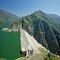
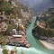

New Tehri is a modern town developed at the hill top, spread over an altitude from 1550-1950 mts above sea level
overlooking the gigantic lake and the Tehri dam.
The old town of Tehri sat at the confluence of the Bhagirathi and Bhilangna rivers. Tehri was the capital of the princely state of Tehri Garhwal (Garhwal Kingdom) in British India, which had an area of 4,180 square miles (10,800 km2), and a population of 268,885 in 1901. It adjoined the district of Garhwal, and its topographical features were similar. It contained the sources of both the Ganges and the Yamuna.
-

Tehri Dam
The most improtant tourist attraction of the tehri is Tehri dam, the highest dam in India and one of the highest in the world. -

Devprayag
Marked by the confluence point of rivers Alaknanda and Bhagirathi, Devprayag is a religious hub and is quite popular among tourists coming for pilgrimage or seeking some solitude close to nature. -

Chandrabadanti Temple
A short hike to the Chandrakoot Mountain, you will arrive at a beautiful temple which is known as Chandrabadanti Temple as it is constructed after Maa Sati’s torso fell here while Lord Shiva was carrying away her burned body. The landscape of the surrounding is quaint and endearing offering a wonderful view of Himalayan Mountains and Garhwal.